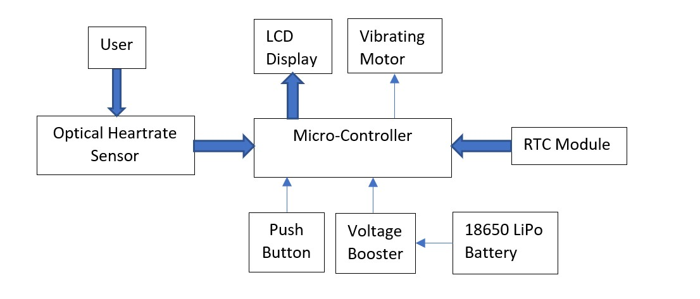

Wearable Blood Pressure Monitoring Device

- This project was built to be a wearable smartwatch like device which constantly monitors blood pressure and displays time like a regular watch. It can be worn on the users wrist with a rubber strap so that the HR sensor is always in contact with the user's skin.
- The project uses an LCD display and push buttons as a user interface. The LCD display constantly displays time and date information form the RTC module and blood pressure from the HR sensor.
- Every time the blood pressure rises above a certain threshold level a vibrational motor is used to alert the user through a haptic interface.
- It is powered by an 18650 LiPo battery which provides a 5V supply. This voltage is boosted to twelve volts by a voltage booster to power the microcontroller.